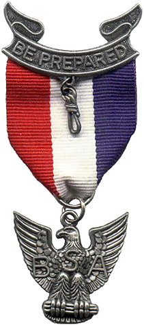
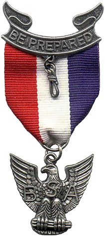

.png)
 

Although at the time this website was created, I have only worked under two different companies, I have also served a Service mission for the Church of Jesus Christ of Latter-Day Saints. This was not the normal type of mission that one would normally serve, as instead of preaching religion, I instead served and helped at various different places. There were many different places in which I served, but the most noteworthy ones are: the Bishops' Storehouse, Deseret Industries, the Food Basket, the Salvation Army, the Humanitarian Center, a local library, and the one of Church's Temples. This would be an incredibly long page if I went into detail on each of them, so to simplify this, many tasks which I did were: Cleaning, organizing, heavy lifting, yardwork, and helping customers.
Another impressive accomplishment which I have is that I am an Eagle Scout from the Boy Scouts of America. I accomplished everything necessary to become one, and for my Eagle Project, I organized a group of volunteers and repainted all of the fire hydrants within a certain area.